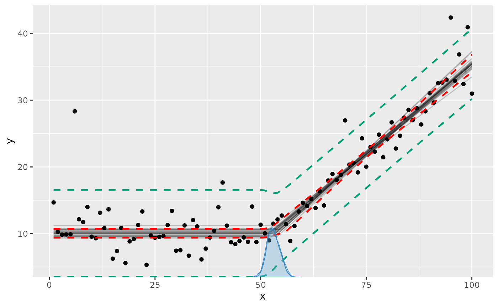
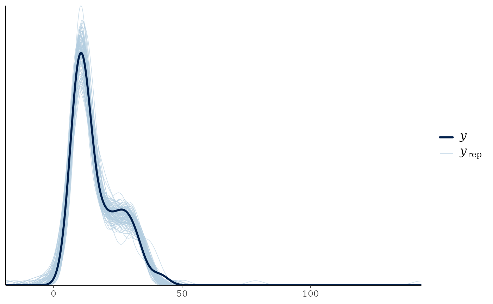
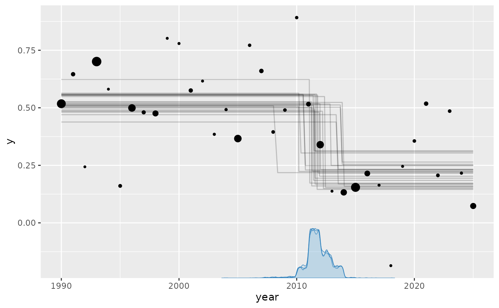

mcp ships with the families listed here, including
gaussian, binomial, Poisson, etc. These are built using
mcpfamily(). This article shows how you can use
mcpfamily() to build your own response families so they
work with the full mcp machinery for inference, plots and
predictions, hypothesis testing, etc.
We start with a minimal mcpfamily(). Then show how
specifying more parts of the mcpfamily enables using more
mcp functionality.
mcpfamily() is currently experimental, so its arguments
may change in future releases.
Example: A Student-t family
We will make a Student-t family for robust regression. It has three
dpars: the location mu, the scale sigma, and
the degrees of freedom nu, where small nu
gives heavy tails. Here is some data with a joined slope after the
change point and heavy-tailed residuals:
data_t = data.frame(x = 1:100)
data_t$y = ifelse(data_t$x < 50, 10, 10 + 0.5 * (data_t$x - 50)) + 2 * rt(100, df = 3)The minimal family
A family needs only what is required to fit the model:
student = mcpfamily(
family = "student", # Display name
links = c(mu = "identity", sigma = "log", nu = "log"), # A link function for each dpar
lower = c(sigma = 0, nu = 1), # See tip-box below
# JAGS likelihood: y ~ dt(mu, 1/sigma^2, nu). Run as_jags(fit, family = student) to see it.
jags = list(likelihood = function(context) {
paste0(context$y, " ~ dt(", context$dpar("mu"), ", 1 / ", context$dpar("sigma"), "^2, ", context$dpar("nu"), ")")
})
)-
links: The link function of each dpar.muis required. The other dpars are always part of the model. When the dpar is not included in a segment, they use identity-link, e.g.,sigma_1is the scale itself. With a formula, e.g.,sigma(1 + x), their link applies, sosigma_Intercept_1is the log-scale. -
jags$likelihood: Returns the JAGS code for one observation.context$yis the response andcontext$dpar("sigma")issigmaon its response scale. JAGS’sdt()takes the precision 1/\sigma^2, not the scale. -
lower: The lower bounds ofsigmaandnu. Priors on the constantsigma_1andnu_1are truncated to these bounds.lowerdoes not apply to dpars included in a formula, where the link function sets the bounds instead. For example, the log link ofnu(1 + x)ensuresnu > 0, but notnu > 1.
Tip on lower: lower only
applies to identity-links, not other link functions where the link
function instead has an inherent lower. mcp
(and brms) use identity-links for dpars not
explicitly mentioned in the formula. So y ~ 1 + x has
identity-link on sigma whereas
y ~ 1 + x + sigma(1) has log-link.
Priors for custom families
The minimal family has no default priors, so mcp asks
for them:
model_t = list(
y ~ 1, # Plateau
~ 0 + x # Joined slope
)
fit = mcp(model_t, data = data_t, family = student)## Error:
## ! family = student() has no default prior for `Intercept_1` and `x_2` and `nu_1` and `sigma_1`. Specify it in `prior`, e.g., `prior = list(Intercept_1 = "dnorm(0, 10)")`.We run mcp() with explicit priors:
prior_t = list(
Intercept_1 = "dnorm(0, 20)",
x_2 = "dnorm(0, 2)",
sigma_1 = "dt(0, 5, 3)",
nu_1 = "dgamma(2, 0.1)"
)
fit_t = mcp(model_t, data = data_t, family = student, prior = prior_t)
summary(fit_t)## Family: student
## Links: mu = identity; sigma = identity; nu = identity
## Draws: 9000 (3 chains with iter = 3000)
## Segments:
## 1: y ~ 1
## 2: ~ 0 + x
##
## Change point parameters:
## parameter mean sd lower upper rhat ess_bulk ess_tail
## cp_1 53.3 1.5 50.4 56.4 1.00 497 1079
##
## Population-level parameters:
## parameter mean sd lower upper rhat ess_bulk ess_tail
## Intercept_1 10.10 0.35 9.43 10.80 1.00 1125 2127
## x_2 0.546 0.028 0.495 0.602 1.00 566 1241
## sigma_1 1.88 0.25 1.42 2.41 1.00 1757 2670
## nu_1 3.7 1.5 1.9 7.5 1.00 1728 2085Violá, we have just fitted a t-regression with change points. We can
now verify that the priors of sigma_1 and nu_1
were truncated to the bounds in lower:
prior_summary(fit_t)## # A tibble: 5 × 5
## parameter segment dpar prior bounds
## <chr> <int> <chr> <chr> <chr>
## 1 cp_1 2 NA dunif(1, 100) [1, 100], ordered
## 2 Intercept_1 1 mu dnorm(0, 20) none
## 3 x_2 2 mu dnorm(0, 2) none
## 4 sigma_1 1 sigma dt(0, 5, 3) T(0, ) [0, Inf]
## 5 nu_1 1 nu dgamma(2, 0.1) T(1, ) [1, Inf]The complete family
Methods that need additional R functions raise an error if they are
missing. For example, fitted() needs the expected response
(r$epred) and predict() needs random draws
(r$simulate). Let’s add these, so we have the complete
family:
student = mcpfamily(
# Minimally required (same as above)
family = "student",
links = c(mu = "identity", sigma = "log", nu = "log"),
lower = c(sigma = 0, nu = 1), # Only applies for non-included terms. See tip-box above.
# JAGS code
jags = list(likelihood = function(context) {
paste0(context$y, " ~ dt(", context$dpar("mu"), ", 1 / ", context$dpar("sigma"), "^2, ", context$dpar("nu"), ")")
}),
# R functions for post-processing
r = list(
log_lik = function(y, dpars, data) dt((y - dpars$mu) / dpars$sigma, dpars$nu, log = TRUE) - log(dpars$sigma),
epred = function(dpars, data, rate = FALSE) dpars$mu,
simulate = function(n, dpars, data, rate = FALSE) dpars$mu + dpars$sigma * rt(n, dpars$nu),
variance = function(dpars, data, rate = FALSE) ifelse(dpars$nu > 2, dpars$sigma^2 * dpars$nu / (dpars$nu - 2), Inf),
# Only improves precision, e.g., in plot(, intervals = "predict")
cdf = function(q, dpars, data) pt((q - dpars$mu) / dpars$sigma, dpars$nu),
quantile = function(p, dpars, data) dpars$mu + dpars$sigma * qt(p, dpars$nu)
),
# Default priors
default_prior = tibble::tribble(
~dpar, ~par_type, ~prior, ~condition,
"mu", "Intercept", "dnorm(mean(.y), 2.5 * sd(.y))", "always",
"mu", "dummy", "dnorm(0, 2.5 * sd(.y) / predictor_scale())", "always",
"mu", "slope", "dnorm(0, 2.5 * sd(.y) / predictor_scale())", "always",
"sigma", "Intercept", "dt(0, sd(.y), 3) T(0, )", "not_included",
"sigma", "Intercept", "dt(0, 2.5, 3)", "included",
"sigma", "slope", "dt(0, 2.5 / predictor_scale(), 3)", "always",
"nu", "Intercept", "dgamma(2, 0.1) T(1, )", "not_included"
),
# AR/MA: ar() and ma() act on y before the link function (here, identity)
garma = list(
observed_r = function(y, data, threshold) y,
observed_jags = function(context) context$y
)
)The prior for constant nu follows brms:
Gamma(2, 0.1) (shape and rate), restricted to
nu > 1 so that the expected response exists.
garma adds support for ar(...) and
ma(...). Its two functions are matching response
transformations in R and JAGS for the GARMA recurrence, before applying
the link function. Here, the identity.
Tip: The default priors for mu and
sigma above are similar to those for the Gaussian family,
but use sd(.y) for the constant sigma prior
instead of max(2.5, round(mad(.y), 1)). To reuse the
Gaussian defaults exactly, including group-level SD priors, start with
default_prior = family(demo_fit)$default_prior and add the
prior for nu. The meta-regression
example below reuses priors this way. The default priors of the
built-in families are good starting points when building custom
families.
Each default prior applies to one dpar and
par_type: intercepts ("Intercept"),
coefficients of categorical predictors ("dummy"), and other
coefficients ("slope"), as listed by
mcp_pars(fit). condition selects priors for
dpars not explicitly included ("not_included") or
explicitly included ("included") in any formula, e.g.,
sigma_1 vs. sigma_Intercept_1 in
sigma(1). Priors use the syntax of
mcp(..., prior), where .y is the response and
predictor_scale() is the SD of the predictor of each
coefficient.
Now we can plot fitted curves, check predictions, and everything else:
model_t2 = list(
y ~ 1,
~ 0 + x + sigma(1) # Joined slope; change scale (models sigma with log-link)
)
# Note: no `prior` argument needed since family has default_prior now
fit_t2 = mcp(model_t2, data = data_t, family = student)
# Plot and predict
plot(fit_t2, interval = c("fitted", "predict"))
# Posterior predictive check
pp_check(fit_t2)
Adding functionality step by step
Here is what each family$r function enables:
| Task | What to define | What you can do |
|---|---|---|
| Fit the model |
family, links,
jags$likelihood, lower,
(default_prior) |
summary(), plot_pars(),
hypothesis(), fitted() and
plot_dpar() for a dpar, e.g.,
dpar = "sigma". |
| Evaluate the likelihood | r$log_lik() |
log_lik(), loo(), waic(),
JAGS-R consistency check. |
| Plot fitted curves | r$epred() |
fitted(), posterior_epred(),
residuals(), plot(). |
| Simulate responses | r$simulate() |
predict(), posterior_predict(),
pp_check(), fit$simulate(), plot(fit, interval = "predict"). |
| AR/MA |
garma$observed_r and
garma$observed_jags
|
ar(...) and ma(...) everywhere. |
| Predictive estimates | r$variance() |
Less simulation noise in the predictive mean and SD from
predict(). |
| Predictive intervals |
r$cdf() and r$quantile(). |
Less simulation noise in predict() and plot(fit, interval = "predict"). |
Custom likelihood and weights: Gumbel with change point
For distributions that JAGS does not have, pass the negative
log-density of the response as a string to
context$zeros_trick(). This uses the “zeros trick”: an
observed 0 from a Poisson distribution with mean \phi has log-likelihood -\phi, so setting \phi to the negative log-density adds the
log-density to the model.
For example, the right-skewed Gumbel distribution has the negative log-density \log\sigma + z + e^{-z} where z = (y - \mu) / \sigma:
gumbel = mcpfamily(
family = "gumbel",
links = c(mu = "identity", sigma = "log"),
lower = c(sigma = 0), # Only applies for non-included terms. See tip-box for t-example.
# JAGS code
jags = list(likelihood = function(context) {
z = context$local("z") # Define intermediate node
c(
paste0(z, " = (", context$y, " - ", context$dpar("mu"), ") / ", context$dpar("sigma")),
context$zeros_trick(paste0("log(", context$dpar("sigma"), ") + ", z, " + exp(-", z, ") + 100"))
)
}),
# R functions for post-processing
r = list(
log_lik = function(y, dpars, data) {
z = (y - dpars$mu) / dpars$sigma
-(log(dpars$sigma) + z + exp(-z)) # Negative log-density for zero-trick
},
# Functions to enable more mcp post-processing
epred = function(dpars, data, rate = FALSE) dpars$mu - digamma(1) * dpars$sigma,
simulate = function(n, dpars, data, rate = FALSE) dpars$mu - dpars$sigma * log(rexp(n)),
variance = function(dpars, data, rate = FALSE) pi^2 / 6 * dpars$sigma^2
)
)context$local("z") names a node for the intermediate
value, and the likelihood returns one string per line. The resulting
JAGS code is (response_observed_ is 0 when sampling the
prior):
z_[i_] = (y[i_] - mu_[i_]) / sigma_[i_]
likelihood_phi_[i_] = response_observed_[i_] * w[i_] * (log(sigma_[i_]) + z_[i_] + exp(-z_[i_]) + 100)
likelihood_zero_[i_] ~ dpois(likelihood_phi_[i_])\phi must be non-negative, so we add a constant (100). This multiplies the likelihood by a constant, so the posterior is unchanged. Because the response is now data rather than a node in JAGS, missing responses are not supported.
context$zeros_trick() also applies weights, so this
family supports y | weights(w). mcp applies
the weights to r$log_lik too. Without the zeros trick, a
family supports weights only if jags$likelihood uses
context$aux("weights", "1"), which returns "1"
when the model has no weights. Let’s down-weight every other
observation:
# Update data with weights
data_gumbel = data_t
data_gumbel$w = rep(c(1, 0.5), length.out = nrow(data_gumbel))
model_gumbel = list(
y | weights(w) ~ 1, # Plateau
~ 0 + x # Joined slope
)
fit_gumbel = mcp(model_gumbel, data = data_gumbel, family = gumbel, prior = prior_t[c("Intercept_1", "x_2", "sigma_1")])
summary(fit_gumbel)## Family: gumbel
## Links: mu = identity; sigma = identity
## Draws: 9000 (3 chains with iter = 3000)
## Segments:
## 1: y | weights(w) ~ 1
## 2: ~ 0 + x
##
## Change point parameters:
## parameter mean sd lower upper rhat ess_bulk ess_tail
## cp_1 52.5 1.8 48.9 56.3 1.01 473 897
##
## Population-level parameters:
## parameter mean sd lower upper rhat ess_bulk ess_tail
## Intercept_1 8.96 0.39 8.18 9.73 1.00 1044 2298
## x_2 0.544 0.031 0.487 0.609 1.00 552 979
## sigma_1 2.27 0.21 1.90 2.71 1.00 3226 4000plot(fit) scales the area of the data points by their
weights.
Auxiliary response columns: meta-regression with change point
A random-effects meta-analysis pools effect sizes y_i with known standard errors s_i from many studies. The true effects vary
between studies with SD \tau, so y_i \sim N(\mu_i, \sqrt{\tau^2 + s_i^2}).
This is y | se(s, sigma = TRUE) in brms.
With a change point, we can ask whether the effect size changed at some
publication year:
studies = data.frame(year = 1990:2025)
studies$s = runif(nrow(studies), 0.05, 0.3)
studies$y = rnorm(nrow(studies), ifelse(studies$year < 2012, 0.5, 0.15), sqrt(0.1^2 + studies$s^2))The family adds the se() column and the tau
dpar, and reuses the mu priors of the Student-t family:
meta = mcpfamily(
family = "meta",
links = c(mu = "identity", tau = "log"),
lower = c(tau = 0), # See tip-box for t-example
# JAGS code
jags = list(likelihood = function(context) {
paste0(context$y, " ~ dnorm(", context$dpar("mu"), ", 1 / (", context$dpar("tau"), "^2 + ", context$aux("se"), "^2))")
}),
# R functions for post-processing
r = list(
log_lik = function(y, dpars, data) dnorm(y, dpars$mu, sqrt(dpars$tau^2 + data$se^2), log = TRUE),
epred = function(dpars, data, rate = FALSE) dpars$mu,
simulate = function(n, dpars, data, rate = FALSE) rnorm(n, dpars$mu, sqrt(dpars$tau^2 + data$se^2))
),
# Note: you can reuse objects from other mcpfamilies
default_prior = dplyr::bind_rows(
subset(student$default_prior, dpar == "mu"),
data.frame(dpar = "tau", par_type = "Intercept", prior = "dnorm(0, sd(.y)) T(0, )", condition = "not_included")
),
response = list(
auxiliary = list(se = list(required = TRUE, operations = c("log_lik", "simulate")))
),
glm_family = gaussian()
)-
Auxiliary response columns: Built-in families use
trials()andweights().response$auxiliaryaddsse(), available ascontext$aux("se")in JAGS anddata$sein R.operationslists the R functions that need the column:"epred","log_lik","simulate", and/or"garma". -
Reuse: Parts of other families can be reused, e.g.,
student$default_priororstudent$r. -
Initial values:
glm_familyletsmcpfind initial change points by fitting themumodel withglm.fit(). It is not used for models with weights or AR/MA terms. Otherwise, initial change points are equally spaced.
The auxiliary column is included in the formula like
weights():
model_meta = list(
y | se(s) ~ 1, # Effect size before
~ 1 # Effect size after
)
fit_meta = mcp(model_meta, data = studies, family = meta, par_x = "year")
summary(fit_meta)## Family: meta
## Links: mu = identity; tau = identity
## Draws: 9000 (3 chains with iter = 3000)
## Segments:
## 1: y | se(s) ~ 1
## 2: ~ 1
##
## Change point parameters:
## parameter mean sd lower upper rhat ess_bulk ess_tail
## cp_1 2011.8 1.0 2010.0 2013.8 1.00 3500 3163
##
## Population-level parameters:
## parameter mean sd lower upper rhat ess_bulk ess_tail
## Intercept_1 0.529 0.037 0.456 0.603 1.00 7616 7557
## Intercept_2 0.219 0.048 0.124 0.317 1.00 6364 6694
## tau_1 0.087 0.032 0.027 0.156 1.00 4581 4444plot() returns a ggplot, so we can scale
the area of each study by its precision 1/s_i^2, as in a forest plot:
gg = plot(fit_meta)
gg$layers[[1]]$mapping = ggplot2::aes(size = 1 / s^2) # The first layer is the data points
gg + ggplot2::scale_size_area(max_size = 4)
Add tau(1) to the second segment to let the
between-study heterogeneity change too. For a fixed-effect
meta-analysis, fix it to (almost) zero:
prior = list(tau_1 = 1e-6).
See ?mcpfamily for more options, e.g.,
response = list(is_discrete = TRUE) for integer-valued
responses.
Custom JAGS code: Sampling the model directly in JAGS
If you need to customize other parts of the mcp-like model, you can run the mcp model yourself, breaking out of the “mcp contract”.
as_jags() returns the JAGS code, data, and initial
values of a model, e.g., to change the JAGS code or to monitor other
nodes. Here, we won’t be changing the code, but instead just continue
the meta-regression example to demonstrate that it replicates:
## jags
## code mcptext,1
## data list,4
## inits list,3
## variable.names character,4
## modules character,0
## levels list,0You can verify that the fitted values match the
summary(fit_meta) above:
model = rjags::jags.model(textConnection(jags$code), jags$data, jags$inits, n.chains = length(jags$inits))
draws = rjags::coda.samples(model, jags$variable.names, n.iter = 3000)
summary(draws) # {coda} summary of drawsmcp methods cannot use draws sampled this way. Use
mcpfamily() to fit a different likelihood in
mcp. This replaces the deprecated
mcp(..., jags_code).